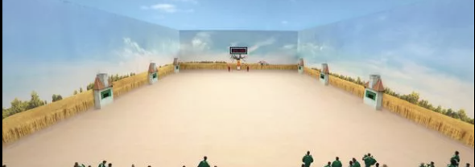

This project is inspired by the “Red Light, Green Light” challenge ("무궁화 꽃이 피었습니다"-Mugunghwa kkochi pieotseumnida) from Squid Game. In the show, players advance toward a finish line but must freeze completely when a large doll-like machine turns around to detect movement.
In class, we explored Teachable Machine and ml5.js for webcam-based image classification. This week, I believe we are exploring gestures! This, in particular, made me want to build a version of the game where the player’s body becomes the only controller — no keyboard or mouse.
When the Green Light symbol is on, players move their on-screen character towards the finish line by performing a specifically-trained Move Gesture in front of the webcam. Alongside this, users can visually hear the famous audio that accompanies the players in this challenge. Once the audio ends, the game switches to Red Light (green symbol turns off, red symbol turns on) and the player has to return to a Still Pose to avoid detection by the 'statue' at the top of the field.
Green Light
Red Light
This game uses the player's body as the complete input system.
Physical Inputs
Digital Output
1. Teachable Machine Model:
2. Game States:
3. Movement Logic:
4. Visual Components:
5. Timing:
The following displays my WIP. Currently, I am struggling with accurate movement detetction and may need to fine tune my learning model. Although, I hope this gives a general idea of what I want my interface to look like.